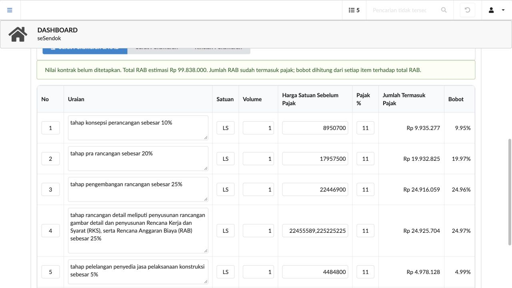

Audit CRUD dan cetak penawaran
25 Oktober 2026. Pengujian interaksi memakai browser aplikasi sebenarnya dengan salinan database QA terpisah.
42modul CRUD sidebar
42modul CRUD modal
14role browser
1.190pemeriksaan daftar/role
Perbaikan yang diperiksa
- Form edit menunggu data selesai dimuat; input file tidak diisi dengan path server.
- Field wajib peraturan, ASN, rekening kegiatan dan pemetaan sudah sesuai tabel.
- Validasi field memakai penanda error; nilai bawaan database tidak dipaksa menjadi field kosong wajib.
- Dialog konfirmasi hapus tetap muncul setelah modal edit.
- Batas wilayah, OPD dan penugasan subkegiatan berlaku untuk detail, RAB, file dan cetak kontrak.
- Cetak surat dan rincian penawaran berasal dari TCPDF; kop rekanan dapat diaktifkan dan diunggah.
- Kolom Uraian RAB diperbesar; nomor, satuan, volume, pajak diperkecil; uraian panjang membungkus dan tinggi field mengikuti isi.
Cakupan dan batas pemeriksaan
- Siklus CRUD 42 modul dijalankan dengan role yang berwenang per modul; bukan seluruh kombinasi 42 modul × 14 role.
- Uji 14 role di browser mencakup CRUD rekanan dan penyembunyian kontrol sesuai izin; matriks 85 modul × 14 role memeriksa daftar dan akses baca.
- Alur khusus di luar form generik tidak semuanya menjalani siklus CRUD penuh di browser.
- SAKIP membutuhkan struktur OPD aktif yang benar; fixture struktur untuk audit hanya dibuat di database QA.
- Empat paket konsultansi belum memiliki penyedia dan tidak diisi nama atau nilai kontrak rekaan.
932 pemuatan halaman menu melalui HTTP, 145 pemeriksaan struktur form, 8 halaman anggaran di browser dan 7 pemeriksaan HTTP cetak penawaran berhasil. Pengujian PHP terfokus mencakup cetak native, batas penugasan kontrak, nilai bawaan referensi, jenis kontrak dan Page Setup. Hasil ini tidak menyatakan seluruh tes lama atau seluruh kombinasi alur khusus telah lolos.
Modul CRUD sidebar dan modal
| Modul | Role penguji | Tambah/edit | Hapus |
|---|
| akun | tapd | Lulus | Dibatasi sesuai izin |
| sbu | tapd | Lulus | Dibatasi sesuai izin |
| ssh | tapd | Lulus | Dibatasi sesuai izin |
| asb | tapd | Lulus | Dibatasi sesuai izin |
| hspk | tapd | Lulus | Dibatasi sesuai izin |
| mapping | tapd | Lulus | Dibatasi sesuai izin |
| aset | tapd | Lulus | Dibatasi sesuai izin |
| organisasi | admin_wilayah | Lulus | Dibatasi sesuai izin |
| satuan | tapd | Lulus | Dibatasi sesuai izin |
| sumber_dana | tapd | Lulus | Dibatasi sesuai izin |
| wilayah | super_admin | Lulus | Dibatasi sesuai izin |
| peraturan | admin_opd | Lulus | Lulus |
| rekanan | admin_opd | Lulus | Lulus |
| asn | admin_opd | Lulus | Lulus |
| pppk | admin_opd | Lulus | Lulus |
| riwayat_jabatan | admin_opd | Lulus | Lulus |
| riwayat_pangkat | admin_opd | Lulus | Lulus |
| cuti | admin_opd | Lulus | Lulus |
| sk_pegawai | admin_opd | Lulus | Lulus |
| pejabat_tahunan | admin_opd | Lulus | Lulus |
| misi_renstra_neo | admin_opd | Lulus | Lulus |
| tujuan_renstra_neo | admin_opd | Lulus | Lulus |
| sasaran_renstra_neo | admin_opd | Lulus | Lulus |
| indikator_sasaran_renstra_neo | admin_opd | Lulus | Lulus |
| program_renstra_neo | admin_opd | Lulus | Lulus |
| indikator_program_renstra_neo | admin_opd | Lulus | Lulus |
| kegiatan_renstra_neo | admin_opd | Lulus | Lulus |
| sub_kegiatan_renstra_neo | admin_opd | Lulus | Lulus |
| renstra_neo | admin_opd | Lulus | Lulus |
| rekening_kegiatan | tapd | Lulus | Dibatasi sesuai izin |
| absensi | admin_opd | Lulus | Lulus |
| penugasan_subkegiatan | kepala_opd | Lulus | Lulus |
| rpjmd_kabupaten | admin_wilayah | Lulus | Lulus |
| usulan_pembangunan | admin_opd | Lulus | Lulus |
| evaluasi_renja | admin_opd | Lulus | Lulus |
| iku_opd | admin_opd | Lulus | Lulus |
| pohon_kinerja | admin_opd | Lulus | Lulus |
| perjanjian_kinerja | admin_opd | Lulus | Lulus |
| perjanjian_kinerja_detail | admin_opd | Lulus | Lulus |
| pengukuran_kinerja | admin_opd | Lulus | Lulus |
| evaluasi_renstra | admin_opd | Lulus | Lulus |
| renja_kinerja | admin_opd | Lulus | Lulus |
Bukti dan data hasil
CRUD sidebar · CRUD modal · Browser 14 role · Matriks role · Menu HTTP · Delapan halaman anggaran · Cetak dan upload kop

File Excel penawaran
19 paket konstruksi · 51 paket konsultansi
Backup MariaDB
config/sesendoknew_db.sql diperbarui dari database utama dan diuji pemulihan: 109 tabel cocok checksum, 15 trigger dan 2 view.